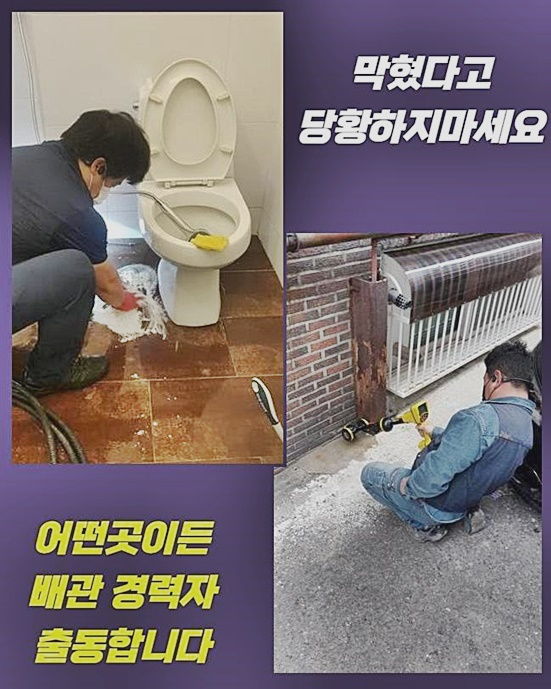
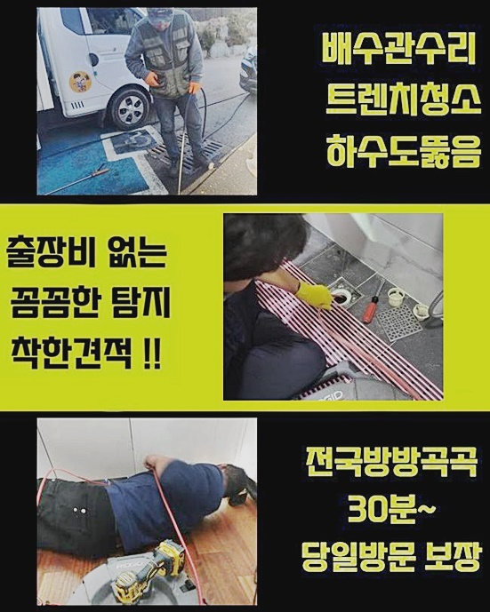
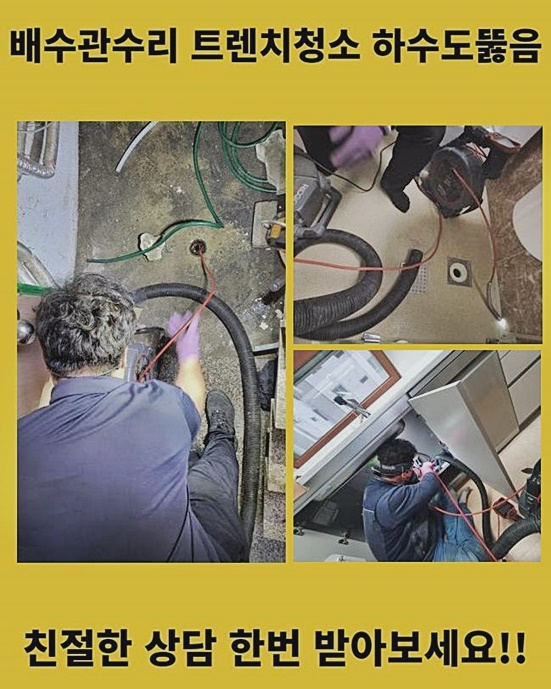
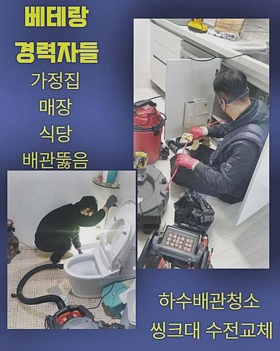
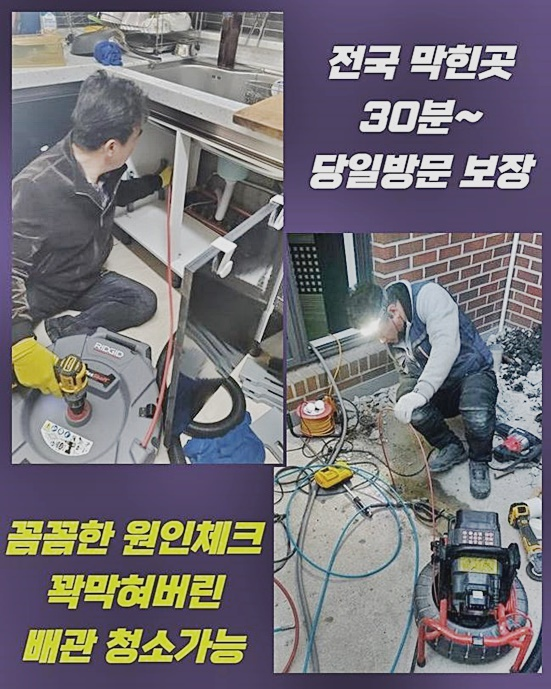
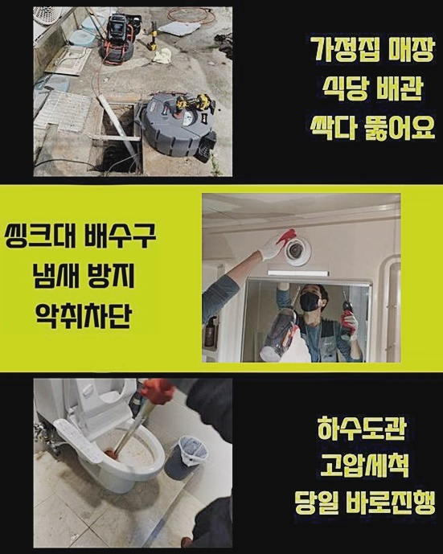

🏠 안산 성포동욕실뚫음 해양동 하수구뚫어주는업체 설비
안산시 상록구 배관막힘 전문 시공 후기

📋 작업 개요
- 위치: 안산시 상록구 해양동
- 서비스 유형: 배관막힘, 고압세척, 내시경점검
- 작업 일시:
- 업체명: 하수구수사대 (010-5615-2118)
🔍 문제 상황
안산 성포동욕실뚫음 해양동 하수구뚫어주는업체 설비
건물이라면 건설 시 배관들을 같이 깔기때문에 저희들을 편하게 만듭니다
그렇지만 기간이 흐르며 하수도는 노후되는 탓에 2차적인 문제까지 야기시켜요
건축시기가 많이 지난 건물들에서 배관 관련 문제들이 야기된 장면을 확인했죠
이와같이 막혀버리는 현상이 얼마만큼 불편들을 끼치는지 일러주는 시간들을 가져볼게요
이런 문제들은 전문업체의 실력들이 필요하기에 조속히 전문인과 문제들을 바로잡기위해 문의를 하시는것이 올바른 방법이에요
내구성이 떨어진다면 안쪽에 잔해가 누적되어서 물들이 흘러가는걸 방해시키는데요
마찬가지로 하수도에서 흘러가면서 기름때같은거나 굳어진 이물이 같이 배관 내부로 모이게되는데요
잔해의 경우에는 하수도 안에서 굳어지는 바람에 군집을 형성시켜 통수를 방해하게 되요
그래서 배수설비의 노후화 완료를 늦추기위해선 주기적인 관리가 행해져야 함은 분명합니다 더나아가 이물이 안쌓이게 유의해주시면 됩니다
시간들을 써서 배수구를 유지시키는게 일상의 편의들을 지켜내는데 필요한 절차로 자리잡고 있습니다
그렇지만 이물들이 축적된것을 방임할 땐 2차 피해가 생겨날 가능성들이 있어 잔해물을 청소하고 꼼꼼히 검수하는게 중요하겠습니다

🔎 원인 분석
💡 전문가 진단: 정밀 진단 장비를 사용하여 슬러지의 고착 여부를 판명하고 타격/세척 작업을 실시했습니다.
석션기기를 이용해서 잔해들을 없애주고 청소를 해주는것은 해결에 결정적인 역할을 합니다
이처럼 주기성을 갖춘 청소와 관리들을 통하여 배관장애를 막을 가능성이 커집니다
잔해가 쌓여버린 하수관과 이물들의 투입부분들을 인지하고 증상의 원초적인 까닭들을 파악해봐야 해요
이러한 내용을 초고로해서 적재적소 수리내용을 세운 뒤 진행시켜주면 완성도높은 결과들을 얻게되실거에요
시중에서 구할 수 있는 배관 관련 용품을 이용하시는건 단기간동안 증세를 해결하지만 근본적인 해결책들이 안될 가능성이 커요
전문업체의 도움으로 정확하며 신속한 처리를 이어간다면 하수구막힘 증상들을 완벽히 수리합니다
기술들과 관련지식을 기반으로해서 청소를 진행할 시 최고의 결과물을 얻어가실 수 있습니다
되도록이면 전문진의 도움으로 안정적인 세척을 실시하는게 중요하겠습니다
그래서 이상징후가 벌어졌을 때 서둘러 전문가에게 전화하시어 문제를 바로 잡는게 좋아요
하수라인으로 배수되는 유속이 저하된다거나 역류문제들이 생겨나는것과 같은 추가적인 피해들이 발발하는 시점에 더욱 중요하죠
해결이 행해지지않을 시 설치된 관로에서 균열들이 생길 수 있으며 물이 새는 등의 증상으로도 심화될지 몰라요
전형적으로 잔해가 쌓이게된 배수관은 석션기 내시경장비 샤프트를 이용해줘요

🔧 작업 과정
이물질들을 청소하고자 밀어내고 샤프트를 이용하거나 고압 세척을 이어간다면 깨끗히 배수로를 고쳐내요
세척을 해줄때 이물을 천천히 청소한 다음 알맞은 작업방식으로 배수로를 청결히 수리해요
무턱대고 수리를 이행하는것은 증상을 제대로 고쳐내지 못할거에요 내시경장비는 깊어서 육안으로 보기 만만치않은 지점들도 보여주기에 반드시 있어야하죠
잔해물들의 형태를 살핀 뒤 작업계획을 이행하고있어요
워터젯 고압세척을 행하면 오염원을 청결히 청소하고 있는데요
전문인의 손길을 빌려 안전하게 세척을 수행하는것이 중요하겠습니다
전문성이 뛰어난 접근 방식을 행하면 하수구막힘 증상을 청결히 해결하고있어요
자가적으로 해결하기보단 전문인의 조언으로 해결계획을 세우시는것이 올바른 방법이에요
배수관에 문제가 생겼을때 배수 속력이 하락하고 역류문제들이 발발하기때문에 외부로 흘러가는 유속이 둔화되는 사태가 벌어지죠
때문에 배수관에선 팽창과 수축이 지속되면서 깨짐이 야기되므로 감내해야만하는 복합적인 증상들을 겪어야만 하는데요
때문에 작업시간을 미리 생각하지않는게 중요하겠습니다
달려갔었던 곳의 경우 욕실안에서 악취들이 코를 찔렀고 이로인해 문제들이 악상황으로 치닫았죠
오수를 빠지게끔하여 역류하게되는 현상들을 살피게되었어요
하수가 안내려간다거나 지속적으로 야기되는지 정확히 알아보았죠
이처럼 함으로써 전문가의 경우 문제 까닭을 인지해 세척에 수월함을 유지시킬 수 있죠
이물들을 없애주고 외부와 연결되어있는 지점을 조심하게 떼내어주고 하수관을 체크했습니다
내시경카메라로 배수관에 문제들이 밀집한 지점들을 체크해보고 무슨 까닭으로 배수장애를 야기시키는지 까닭을 찾아내기 위해 집중해보았어요
의뢰인분께 배수관의 현 상황들을 보여드리고 안내하고 문제 시정을 전달해드렸어요
무엇때문에 막히게되는 사태가 발발한것인지 파악한 뒤 이유들을 제거시키고, 안정적인 해결방법을 수행하는데 노력을 기울였는데요


✅ 작업 완료
그렇기에 고객의 피해들을 잠재우고 최고의 서비스들을 제공하도록 최선의 방식만을 추구합니다
저희업체가 해당 장소에 가기 이전 여타 다른곳에서 다녀갔으나 문제들이 시정이안되어 찾아보시다가 저희업체를 불러주셨어요
고객의 경우 저희만의 시스템들에 대하여 만족감을 얻었다고 하셨으며 작업에 실패했을때 비용들을 받는 일이 없으며 사후관리를 보장한다는 사실이 좋았다고 하셨죠
알맞은 장비들을 준비하여 고민들을 줄인 뒤 의뢰자의 만족도를 높이기위하여 발전을 거듭합니다
문제발생 시점에 저희께 연락하신다면 빨리 달려갈게요!



⚠️ 하수구 배관 막힘 예방 및 관리 가이드
- ✅ 머리카락, 비닐, 물티슈 등 물에 분해되지 않는 이물질은 절대 흘려보내지 마세요.
- ✅ 기름기 많은 식기는 설거지 전 키친타올로 먼저 기름때를 닦아내세요.
- ✅ 주기적으로 배수구에 뜨거운 물을 가득 부어주어 유지방 고착을 방지하세요.
- ✅ 작업 후 1년 이내 재발 시 무상 A/S 보증 서비스를 제공합니다.
💡 핵심 정리
- 확실한 장비 작업(내시경 점검 및 샤프트 스케일링)으로 원인을 뿌리 뽑습니다.
- 작업 후 1년 이내에 동일한 부위 재발 시 100% 무상 A/S 서비스를 보장합니다.
- 서울 · 경기 · 인천 전 지역에 24시간 언제든 긴급 출동할 수 있도록 항시 대기 중입니다.
❓ 자주 묻는 질문 (FAQ)
🚨 안산시 상록구 배관막힘 문제로 고민이신가요?
정확한 원인 진단과 확실한 시공으로 재발 없는 해결을 약속드립니다.
24시간 긴급 출동 | 서울 · 경기 · 인천 전지역 | 1년 내 재발 시 무상 A/S